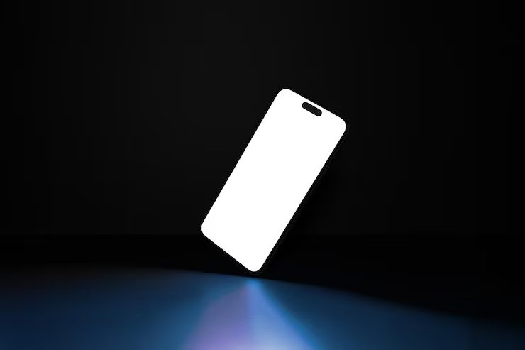
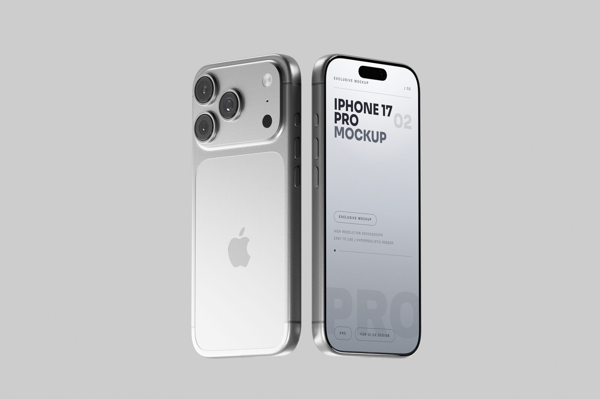
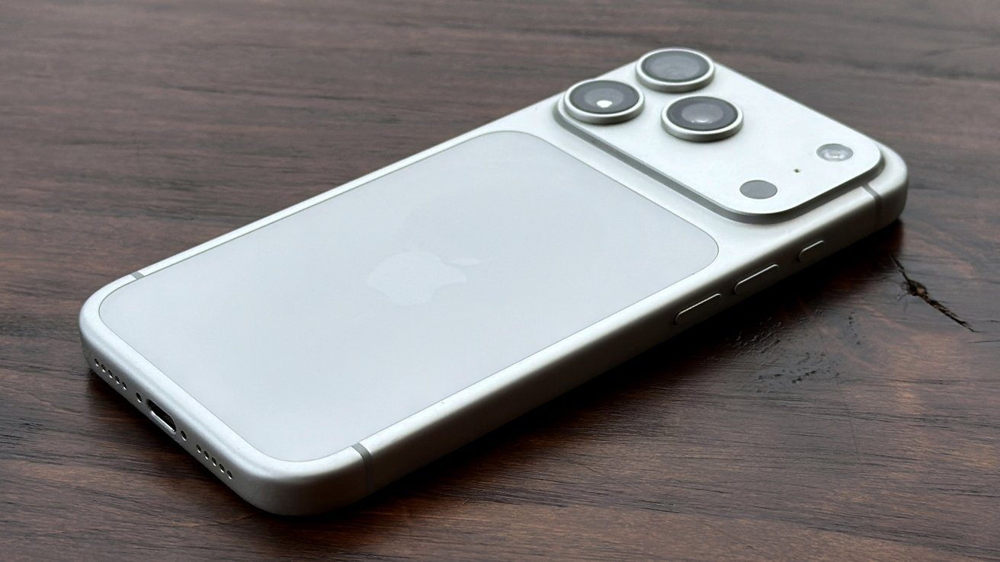
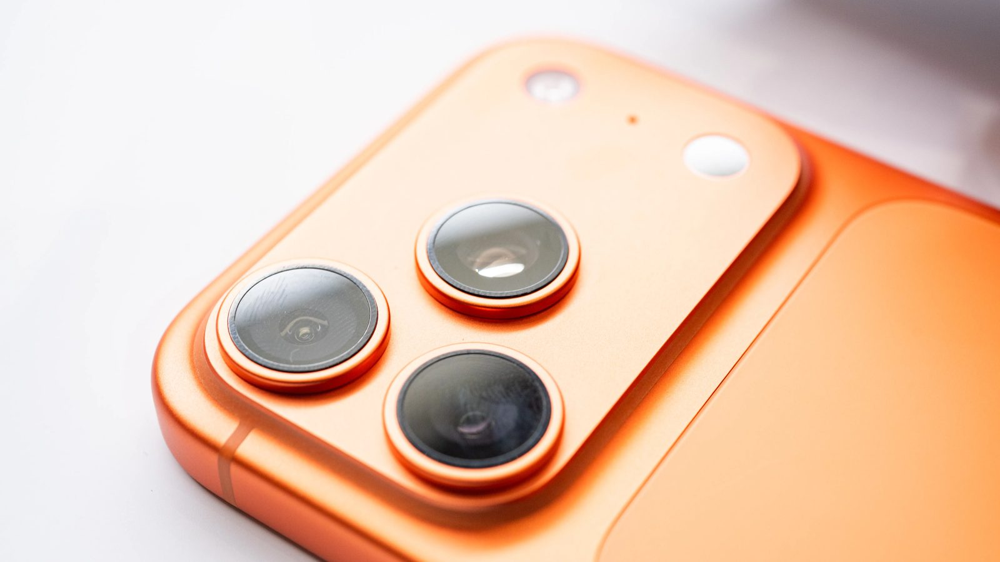
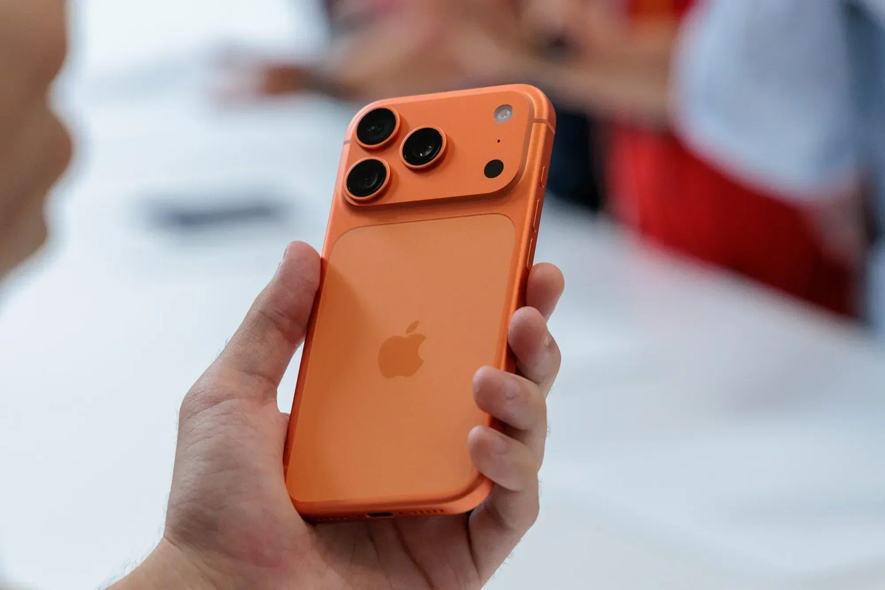

iPhone 17 Pro. Створений, щоб знімати.
Екран 120 Гц, три камери по 48 Мп і алюмінієвий корпус. Обирайте колір і пам'ять.
Обрати модельОтримати новини
Що всередині
120 Гц
Плавний екран
AMOLED 6.7" з яскравістю до 2000 ніт.
48 Мп
Камера Pro
Три об'єктиви для портретів, пейзажів і зуму.
3 камери
Єдиний блок камер
Широкий кут, ультраширокий і телеоб'єктив.
Галерея
Натисніть на зображення, щоб збільшити.




Відгуки тестувальників
Дізнайтесь про знижки та наявність
Залиште email, і ми повідомимо про знижки та нові надходження.